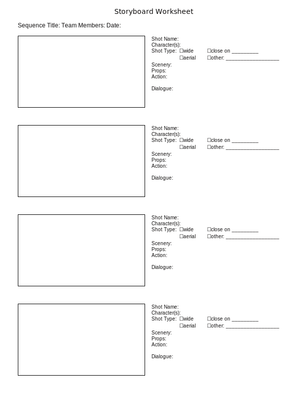

Exercise - Developing the Storyboard¶
This exercise addresses developing concrete details for a specific vignette. This builds upon the treatment developed in Exercise - Developing the Production Theme and moves toward a fully realized scene.
Drawing the Storyboard¶
Storyboarding is a well-established method in cinema production to plan and previsualize a series of scenes via sketches. The first objective of this exercise is to draw a storyboard which graphically renders the story as described in the treatment. The storyboard can serve as a focal point both for discussion within the team and for communicating the complete idea to the cinematographer. Please see the storyboard worksheet below for the following discussion.
The sequence for this project should be no longer than 30 seconds. This may be divided into several individual shots to show action from different viewpoints. The selection of camera angles is as much as part of the storytelling as the action.
The worksheet contains four sections for planning individual shots. For each, please sketch a simple line drawing representing the scene as seen by the camera for that shot. Feel free to add arrows or flow lines which indicate the direction of action for each visible character. On the right hand side, please describe the elements of the shot and scene, and write out any dialogue in full.
It may be helpful to puppet the robot across a tabletop by hand while choosing the precise movements. One team member can move each robot, while another acts as cinematographer and frames each camera view using two hands.
Rehearsal Preparation¶
Once the action and dialogue are decided, the next step is to develop the robot programming to the point where the performance can be fully enacted in a real-time scene rehearsal.
Storyboard Worksheet¶
A printable PDF version of the storyboard worksheet: storyboard-worksheet.pdf
An SVG version is linked below, which may be also be printable in some browsers.
{kind=link}
Garth Zeglin, Personal Robotics Lab, Carnegie Mellon University